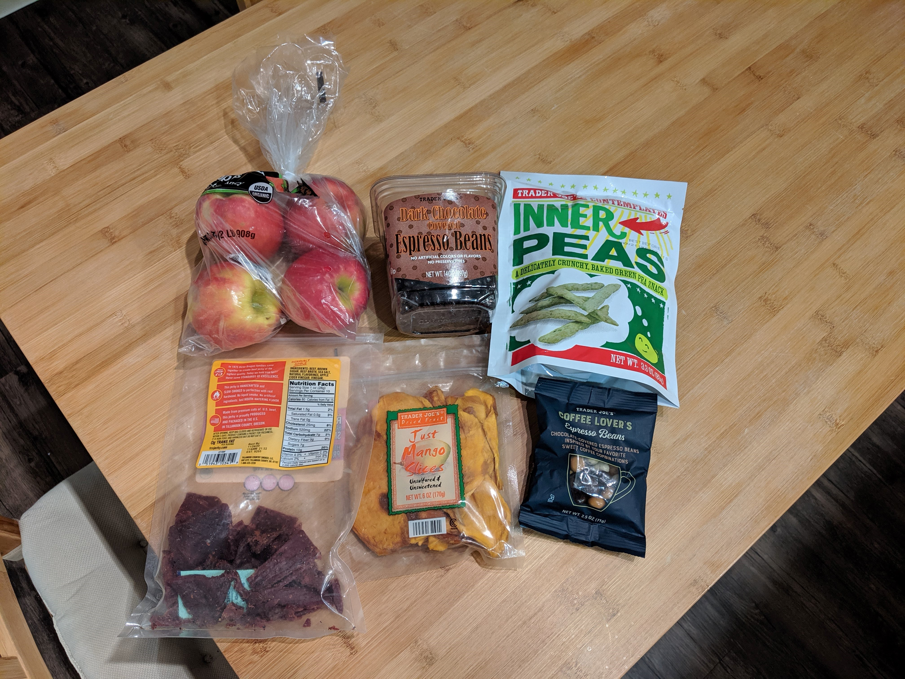

Headin' down the Tennessee Turnpike
I didn't even know the "Tennessee Turnpike" was an actual thing. I just wanted the alliteration. But it turns out it was an old toll road that ran from Louisville to Nashville in the 19th century. These days, the name has been upcycled to be used for a section of relatively flat trail along the Appalation Trail. Neat!
Anywho! I will not be traversing either of those today. But I am driving from Virginia to Tennessee. I find it funny that, even though these two states share a border, my trip will still be about 550 miles and 8.5 hours of driving. Add in time for breaks and we're looking at a 10-11 hour trip overall. It's not too bad though. I did a 600 mile trip last year and it was actually kind of enjoyable. I am stocked up on snacks and music, podcasts, and a book all downloaded for easy listening throughout the drive. Throw on the cruise control and it's smooth sailing.
